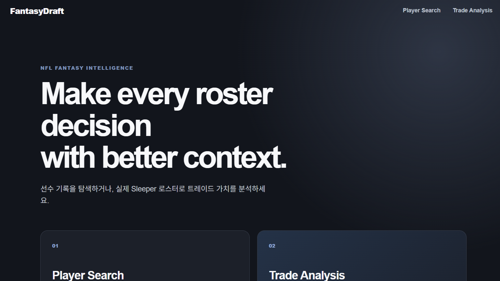
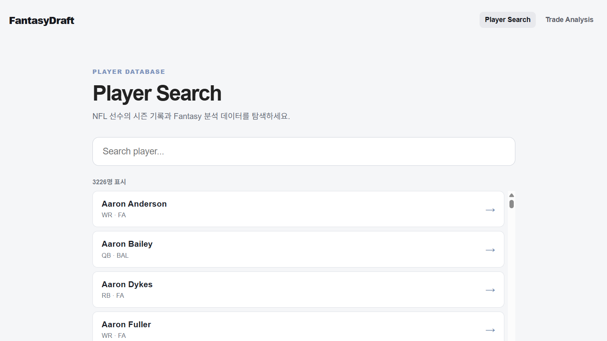
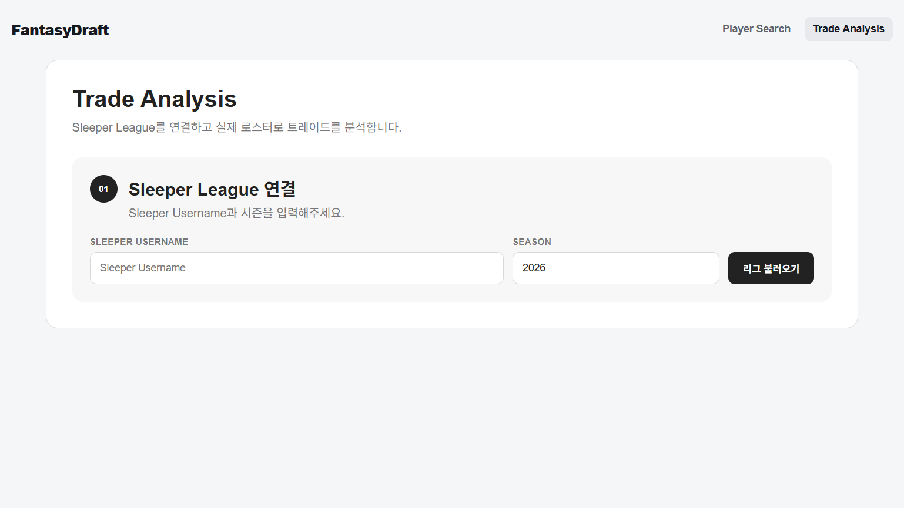
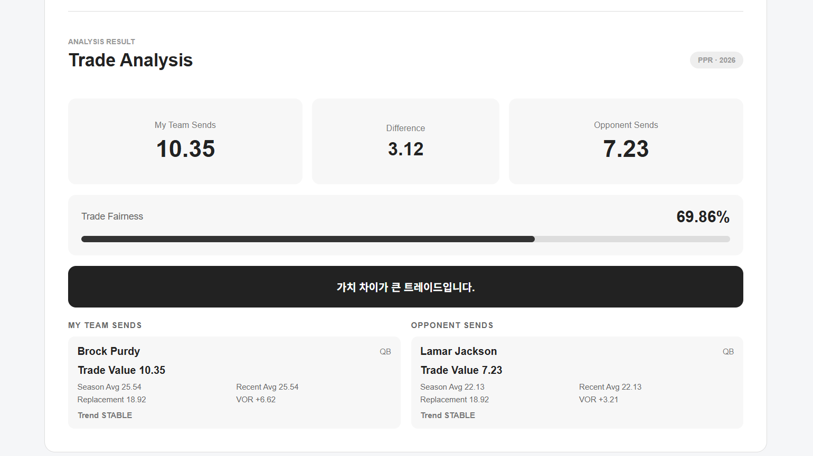

Player Search & Analysis
NFL 선수를 검색하고 시즌별 기록과 Fantasy 점수를 확인할 수 있도록 구현하였습니다. 리그의 Scoring Rule에 따라 동일한 선수라도 다른 점수가 계산됩니다.
NFL FANTASY ANALYSIS PLATFORM
NFL 선수 기록과 Fantasy 데이터를 조회하고, 실제 Sleeper League의 로스터와 Scoring Rule을 반영하여 트레이드를 분석할 수 있도록 만든 개인 프로젝트입니다.
PROJECT OVERVIEW
선수 기록을 단순히 조회하는 것에서 끝나지 않고,
실제 Scoring Rule과 로스터 구성을 반영해,
선수 가치와 트레이드를 분석하는 서비스를 구현하였습니다.
React 기반 UI에서 선수 검색과 분석 기능을 제공하고,
Spring Boot API에서 선수 데이터와 리그 정보를 처리합니다.
Sleeper API를 이용해 실제 Fantasy League를 연결하고,
nflverse 데이터를 활용해 선수 기록을 관리하였습니다.
PRODUCT FEATURES
리그 연결 → 선수 가치 계산 → 트레이드 분석
하나의 사용자 흐름으로 이어지도록 구현하였습니다.
NFL 선수를 검색하고 시즌별 기록과 Fantasy 점수를 확인할 수 있도록 구현하였습니다. 리그의 Scoring Rule에 따라 동일한 선수라도 다른 점수가 계산됩니다.
Sleeper API를 통해 사용자의 실제 League와 Roster를 불러옵니다.
League별 Scoring Rule도 함께 가져와 분석 기준으로 사용합니다.
시즌 기록과 Fantasy 점수, 포지션 데이터를 기반으로 선수별 Trade Value를 계산하도록 구현하였습니다.
실제 League의 두 팀과 선수를 선택하면 양쪽의 Trade Value를 비교하고 트레이드 균형을 확인할 수 있도록 구현하였습니다.
ACTUAL SERVICE
FantasyDraft의 주요 기능을 실제 데이터와 함께 동작시킨 화면입니다. 선수 검색부터 Sleeper League 연결, 실제 로스터를 이용한 Trade Analysis까지 하나의 흐름으로 구현했습니다.

Player Search와 Trade Analysis 두 기능으로 진입하는 FantasyDraft의 메인 화면입니다.

NFL 선수 데이터베이스에서 선수를 검색하고, 선수별 시즌 기록과 Fantasy 분석 화면으로 이동할 수 있습니다.

Sleeper Username과 시즌을 입력하여 실제 Fantasy League를 불러오고, 리그의 로스터와 Scoring Rule을 분석에 연결합니다.

선수별 Trade Value를 계산하고 두 팀이 주고받는 가치의 차이와 Trade Fairness를 함께 보여주도록 구현했습니다.
SYSTEM ARCHITECTURE
선수 검색, 분석, 리그 연결 및 Trade UI
REST API, scoring engine, trade value 계산
선수, 주차별 기록, 리그와 로스터 데이터
AWS DEPLOYMENT VALIDATION
로컬 환경에서 개발한 애플리케이션을 AWS에 직접 배포해 전체 서비스 흐름을 검증하였습니다.
React와 Spring Boot를 EC2에서 실행하고 PostgreSQL은 RDS로 분리했으며,
Lambda를 이용한 데이터 동기화 호출과 CloudWatch 로그 확인을 진행하였습니다.
Nginx에서 React 정적 파일을 제공하고 /api 요청은 Spring Boot로 Reverse Proxy하도록 구성하였습니다.
선수 기록, Fantasy League, Roster 및 분석 데이터를 PostgreSQL에 저장하고 EC2의 Spring Boot 애플리케이션과 연결하였습니다.
Lambda에서 nflverse 선수 기록 동기화 API를 호출하고 실행 결과와 로그를 CloudWatch에서 확인하였습니다.
기능 검증 후 불필요한 AWS 비용이 발생하지 않도록 테스트에 사용한 리소스는 모두 정리하였습니다.
BUILT FOR PRACTICAL DECISIONS